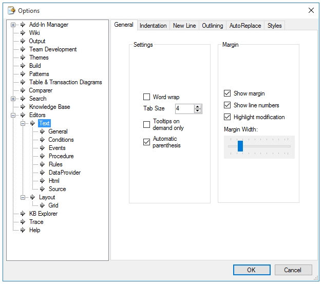
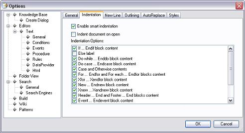
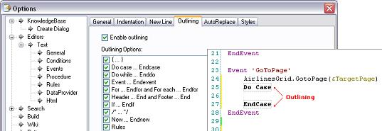
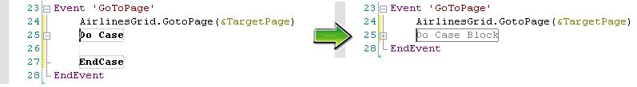
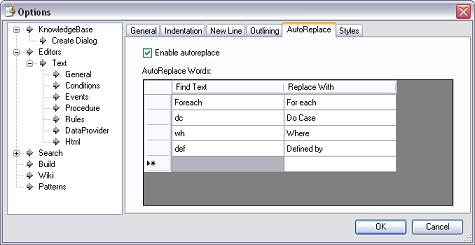
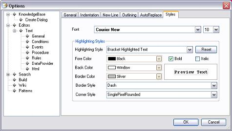

In this node you can configure many characteristics for the Rules, Procedures, Conditions, Data Providers and Html editors.  In the area to the right we can see a group of tabs, as follows: General tabYou will use this tab to set the other tabs with their default values. Of course, this occurs if you leave the Use General Configuration check box selected.
Indentation tabUse this tab to establish indentation options related to several sentences. You can select/clear the desired code structures in the list below. 
New Line tabIf any of the marked commands below is not at the beginning of the line, it will be placed at the beginning of the next one. Outlining tabYou may want the structured code pieces to be surrounded by a dotted line frame, as shown in the picture below.  With this feature you can also collapse the piece of code by leaving the check box selected.  To obtain these effects, you need to leave the Enable outlining check box selected. AutoReplace tabThis tool is very convenient for developers, as it will help them when they have to write a lot of code. Here is when the Autoreplace functionality appears. With it you can type, in consecutive rows, abbreviations, acronyms, synonyms, and any word that you may consider significant for converting code.  Styles tabYou can use this tab to configure some characteristics of the editors, such as fonts, colors, etc. 
|
| Backlinks | |
| Color Property | Category:IDE Configuration Options |